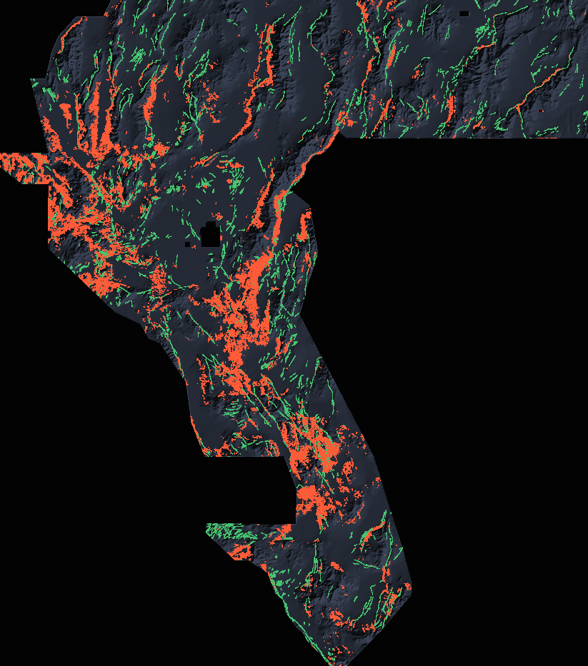

One file, one decision
Download wbggemsdoe3-skarpline-union-20261027-610acf58-zeros.tif and upload it unchanged at
DrivenData → New submission.
It is a single-band float32 GeoTIFF, EPSG:32611, 100 m, 3730×3292, every value finite and inside [0,1],
zero mass outside the scored footprint.
SHA-256 610acf58905f3b461971bd4a5c67ff7c30894cd92dca20f480f27ecc66de5bb2
Suggested note (≤140 chars): GEMS-DOE-3 skarpline union 60k+40k, dti-optimised binary, cat-suppressed r=0
The short version
The organiser's ground truth is faults that are not in the public catalogue. Reproducing the public catalogue therefore scores almost nothing. Every one of the nine focus sites' best files is a re-trim of the same dotted network (all 36 pairwise comparisons exceed the 70%-within-3-px duplicate rule), and they all sit between 0.2449 and 0.2778 reported. This repo's file is a different object: a union of two statistically independent lineament supports, with an ESTIMATE of 0.428 from a metric model that reproduces nine of those archived scores to within ±0.02. It is not an organizer score: no submission of this file has been uploaded or scored.

Quick look (4× down-sampled). ■ our submission · ■ public USGS/INGENIOUS catalogue · ■ USGS SGMC faults >300 m from every catalogue fault (the validation proxy that stands in for the organiser's hidden new-fault set). Background: detrended-elevation hillshade.
What to do next
- Download the GeoTIFF (or the .zip).
- DrivenData → New submission → choose the file → note:
GEMS-DOE-3 skarpline union 60k+40k, dti-optimised binary, cat-suppressed r=0→ submit. Check the weekly cap on the submission page; this repository does not have your account quota. - Read the executive summary for the full table, the calibration curve and the honesty constraints; read the science for why the metric rewards this shape.